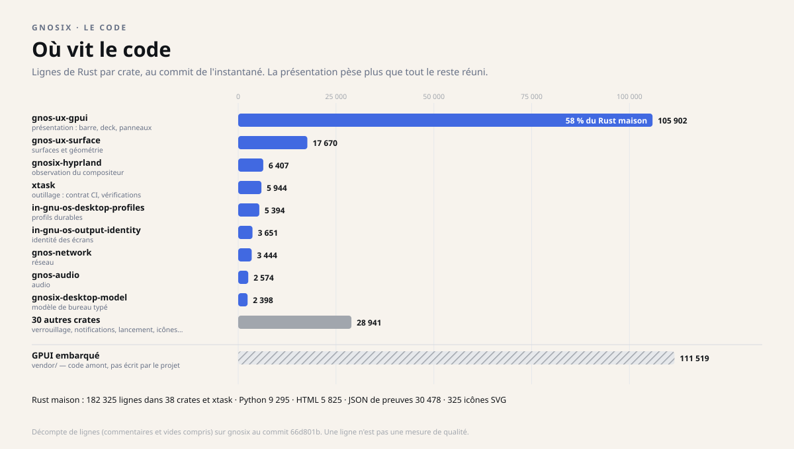
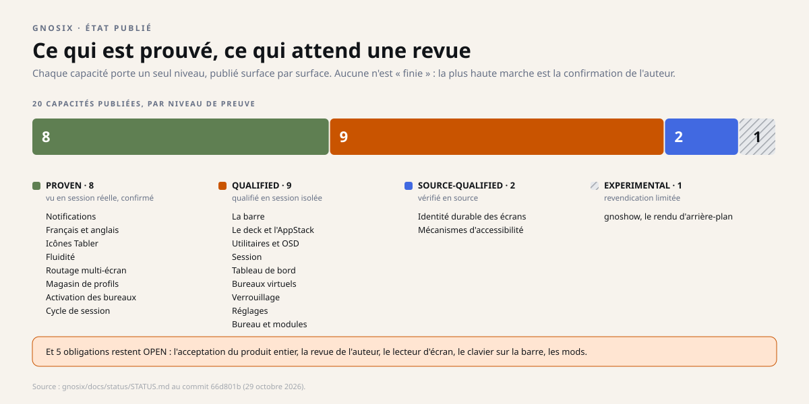
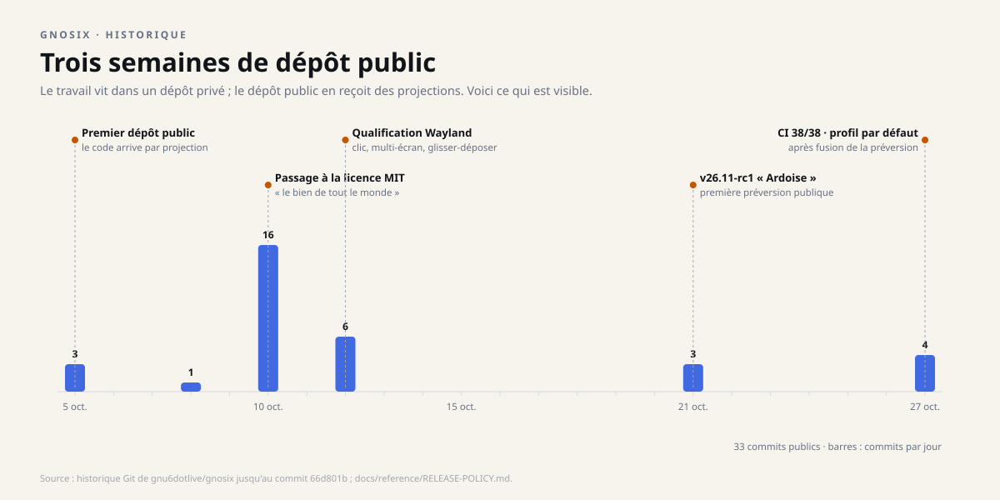
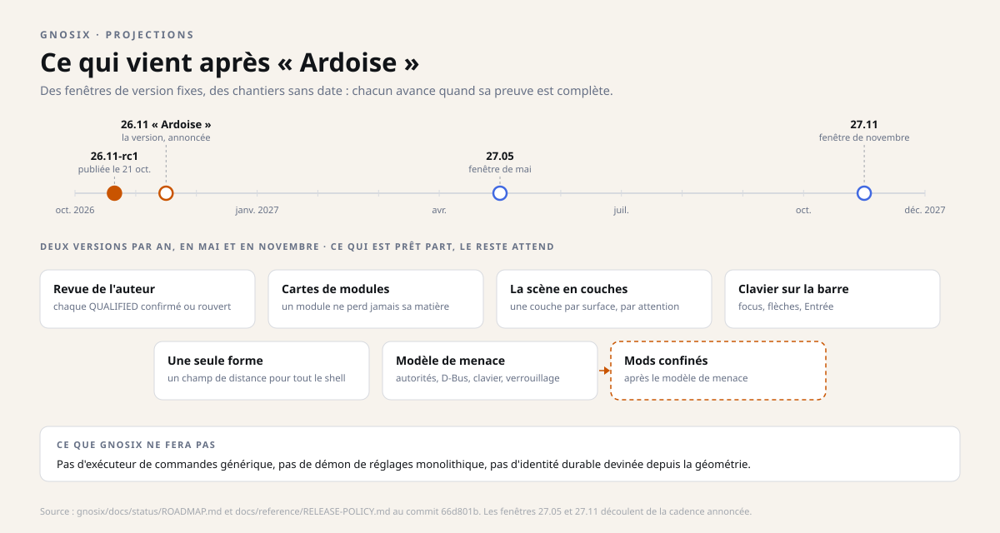

Instantané du 29 octobre 2026. Ce dossier décrit les quatre dépôts tels qu'ils étaient ce jour-là ; les projets ont continué d'avancer depuis, et les dépôts font foi. Les liens soulignés mènent aux sources, figées à leur état de ce jour.
Dossier 1 · le bureau
gnosix
Un environnement de bureau pour Linux, écrit en Rust, qui dessine lui-même tout ce que vous voyez : la barre, le deck et son AppStack, les fenêtres, les réglages, l'écran de verrouillage.
Expérimental 26.11-rc1 « Ardoise » Licence MIT
En une image
Pensez à un atelier bien rangé. Il y a le plan de travail sur lequel on agit, les tiroirs où l'on range ce qui doit survivre à la nuit, l'étagère où sont posés les outils, et le règlement qui dit qui a le droit d'ouvrir quoi.
Un bureau informatique, c'est exactement cela. La plupart des bureaux fondent les quatre en un seul programme. gnosix les sépare, et nomme chacun.
Ce que ça fait, concrètement
Une fois lancé, gnosix remplace l'habillage graphique de la session. Il ne s'agit pas d'une décoration posée sur un bureau existant : c'est le bureau lui-même, dessiné en Rust et affiché nativement.


La barre
Persistante, sur n'importe quel bord de n'importe quel écran. Elle se déplace le long du cadre, ses modules la suivent et pivotent avec elle. On peut les réordonner à la souris. Bord, densité, épaisseur et visibilité sont mémorisés.
Le deck et l'appstack
Un dock de cartes d'applications, avec magnification. L'appstack y cherche dans le catalogue (récent, A–Z, catégories, recherche) et lance via l'autorité de lancement. Les épingles sont durables.
Les utilitaires
Basculements rapides (ne pas déranger, garder éveillé, micro, Wi-Fi, Bluetooth), luminosité (rétroéclairage et DDC/CI), volume, avec affichage à l'écran.
La session
Verrouiller, suspendre, se déconnecter, redémarrer, éteindre — via logind. Les actions lourdes sont retenues, les blocages sont montrés.
Le tableau de bord
Calendrier, commandes média (MPRIS) et ressources système, extrudés depuis l'horloge de la barre.
Les bureaux virtuels
Un gestionnaire de bureaux avec vignettes vivantes des fenêtres — en mémoire seulement, jamais quand la session est verrouillée, avec une liste d'applications exclues.
Les notifications
gnosix est le service de notifications de la session. Règles par application, mode « ne pas déranger ».
Le verrouillage
Écran de verrouillage avec PAM, verrouillage automatique par inactivité et ses réglages.
Les réglages
Une seule surface : barre, deck, surfaces, écrans (résolution, fréquence, échelle, rotation, position, avec conservation ou retour arrière), applications par défaut, notifications, langue, fond d'écran.
La langue et les icônes
Anglais et français partout, choisis dans les réglages, avec un contrôle de couverture. Icônes Tabler dessinées nativement.


Sobre au repos, précis en mouvement
Un bureau passe l'essentiel de son temps à ne rien faire. gnosix en tient compte : aucun redessin au repos. Rien ne se repeint tant que rien ne change, ce qui épargne la carte graphique et la batterie.
Quand quelque chose bouge — la barre qui change de bord, le deck qui s'étire — le mouvement suit des échéances de 4 millisecondes, calées sur la fréquence réelle de l'écran. Le dépôt l'a mesuré à 75 et à 165 images par seconde. À 165 Hz, une image dure environ 6 ms : une échéance de 4 ms laisse de la marge pour ne jamais en sauter une.
La vie privée par construction
Le gestionnaire de bureaux montre des vignettes vivantes des fenêtres. Le dépôt en fixe les bornes : les vignettes vivent en mémoire seulement, ne sont jamais capturées quand la session est verrouillée, et une liste d'applications exclues les empêche pour les fenêtres sensibles. Les notifications ont des règles par application et un mode « ne pas déranger ».
Un seul éditeur de texte, partout
Chaque champ de saisie du bureau — recherche, réglages, verrouillage — passe par le même éditeur, qui découpe le texte par graphème (un caractère tel qu'on le voit, accents et émojis compris) et accepte les méthodes de saisie. Le français et l'anglais couvrent tout le shell, écran de verrouillage compris, et un contrôle de couverture refuse une chaîne oubliée.
Sous le capot : quatre plans
C'est la décision d'architecture la plus importante du projet, et la plus facile à expliquer : observer, se souvenir, montrer et agir sont quatre métiers différents. gnosix leur donne quatre plans distincts.

Le plan d'observation traduit les faits du compositeur en un modèle typé et déterministe : écrans, bureaux, fenêtres, focus, visibilité. Ce modèle ne décide de rien ; il décrit.
Le plan durable garde les identités et les profils. Un écran branché n'est pas automatiquement « l'écran connu » : l'association entre l'identité de session et l'identité durable est explicite, et peut échouer volontairement.
Le plan de présentation projette l'état courant à l'écran. La géométrie y est une donnée du produit, pas un décor : la même géométrie sert à peindre et à décider si un clic touche la cible.
Le plan d'autorité, enfin, exécute les gestes rares : verrouiller, lancer une application, changer de bureau. Chaque demande porte une cible typée et une frontière de fraîcheur. Si l'état est inconnu ou périmé, le système refuse plutôt que d'inventer un comportement normal.
Deux façons de construire un bureau
| Question | Bureau « monolithique » | Bureau séparé (gnosix) |
|---|---|---|
| Qui connaît l'état ? | Le programme principal, un peu partout | Un modèle unique, explicite |
| Qui a le droit d'agir ? | Souvent le même programme | Des services étroits, authentifiés |
| Que se passe-t-il si l'état est flou ? | On suppose un état plausible | On refuse l'action |
| Comment prouver qu'une fonction marche ? | « Ça a l'air de marcher » | Un niveau de preuve nommé, publié |
Aucune des deux approches n'est « la bonne » dans l'absolu. La seconde coûte plus de travail, mais rend les pannes explicables et les permissions vérifiables.
Où vit le code
Au commit de l'instantané, gnosix compte 182 325 lignes de Rust écrites par le projet, réparties en 38 paquets (« crates ») et un outil de vérification. La couche de présentation, gnos-ux-gpui, en porte à elle seule 58 % : dessiner un bureau qui réagit bien demande plus de code que l'observer ou le gouverner.

Ce que « prouvé » veut dire ici
Le dépôt distingue cinq états, et les publie surface par surface. Ce n'est pas de la rhétorique : c'est ce qui empêche une démonstration réussie de devenir une promesse générale.
| État | Ce qu'il veut dire | Exemple |
|---|---|---|
| PROVEN | Qualifié en source, observé dans la session réelle, confirmé par l'auteur. | Les notifications, le français et l'anglais, la fluidité. |
| QUALIFIED | Qualifié en source et en session Wayland isolée ; déployé chez l'auteur, confirmation en attente. | La barre, le deck, les réglages, le verrouillage. |
| SOURCE-QUALIFIED | Les contrats et invariants sont exercés en source ; le comportement réel plus large n'est pas impliqué. | L'identité durable des écrans, les mécanismes d'accessibilité. |
| EXPERIMENTAL | Travail actif, revendication limitée. | Le moteur de rendu de fond d'écran. |
| OPEN | Une obligation nommée reste non résolue. | L'acceptation produit complète. |

Historique : trois semaines de dépôt public
Le dépôt public de gnosix ne raconte pas toute l'histoire, et le dit. Le développement a lieu dans un dépôt privé ; le dépôt public en reçoit des projections à chaque version. Ce qui est visible commence le 5 octobre 2026.

Les jalons, dans l'ordre
- 5 octobre — première coupe publique du code, et un contrat CI dès le départ.
- 10 octobre — passage de la GPL à la licence MIT : « le bien de tout le monde », dit la demande de fusion. Les versions déjà distribuées gardent leurs permissions.
- 12 octobre — tests d'enveloppe Wayland : clic différé, deux écrans, glisser-déposer local ; les blocages restants sont écrits, pas cachés.
- 21 octobre — v26.11-rc1 « Ardoise », publiée comme préversion, avec une veille de recherche sur les systèmes amont.
- 27 octobre — fusion de la préversion, contrat CI à 38/38 en 26 secondes, et l'amorçage d'un profil de bureau par défaut au premier démarrage.
Comment une version naît
La politique de publication, ratifiée le 21 octobre, tient en quelques règles. Le dépôt privé est la vérité ; le dépôt public est une projection écrite dans un seul sens, par un script, avec une liste de chemins autorisés et un manifeste d'empreintes. Une contribution publique est relue, intégrée côté privé, et revient avec la version suivante.
Le produit se nomme par l'année et le mois de sa sortie, plus un nom de minéral, dans l'ordre alphabétique : 26.11 « Ardoise ». Les crates, elles, gardent un versionnage sémantique : une crate dont l'interface change doit changer de version, sinon la vérification de publication la refuse. Trois canaux : edge (la branche de développement, déployée chez l'auteur), stable (la dernière version), et un éventuel LTS, décidé plus tard.
Le 27 octobre, après la fusion de la préversion : 38 contrôles sur 38, en 25,9 secondes. Le jeu de contrôles a été réorganisé avec la préversion (il en comptait 48 avant) : les deux chiffres ne se comparent pas, et le reçu le précise.
Projections : ce qui vient après « Ardoise »
La feuille de route de gnosix est pilotée par les preuves : un chantier avance quand ses preuves sont complètes et, si nécessaire, acceptées par l'auteur. Les versions, elles, ont des dates fixes — deux par an, en mai et en novembre — et emportent ce qui est prêt.

Les chantiers annoncés
La revue de chaque surface QUALIFIED ; des « cartes » pour que chaque module de la barre garde sa matière quand on le déplace ; une scène construite en couches ; le clavier sur la barre ; une seule forme mathématique pour tout le shell ; un modèle de menace ; puis des mods confinés, chacun dans son processus, avec des permissions déclarées.
Ce qui ne sera pas fait
Pas d'exécuteur de commandes générique, pas de démon de réglages monolithique, pas d'identité d'écran devinée à partir de sa géométrie, et pas d'adoption silencieuse de l'autorité d'un projet donneur. Une version stable pour autrui n'est pas revendiquée avant une revue d'accessibilité.
Ce que ça change, selon qui vous êtes
Utilisateur Linux curieux
Vous pouvez essayer un bureau qui ne ressemble pas aux autres, sur Arch Linux avec Hyprland. Prévoyez du temps : ce n'est pas encore une installation « clé en main » pour le grand public.
Développeur ou intégrateur
Le dépôt est une référence rare sur la séparation entre observation, état durable, présentation et autorité. Les contrats typés et les invariants sont documentés et testables.
Décideur ou financeur
La valeur n'est pas « un bureau de plus ». C'est une méthode : un produit visible, dont chaque affirmation est bornée, datée et vérifiable. Le risque est assumé et affiché.
Ce qui reste ouvert
- Pas encore un bureau pour autrui. 26.11-rc1 est une préversion publique expérimentale, utilisée au quotidien par son auteur — pas un produit stable.
- L'accessibilité lecteur d'écran n'est pas revendiquée. La navigation clavier et le focus existent ; l'usage réel par une personne non voyante n'a pas été revu.
- Le clavier sur la barre est conçu, pas construit.
- Les modules tiers sont conçus, pas construits. Un modèle de menace doit venir avant.
- Le fond d'écran natif reste expérimental.
Pour aller plus loin
Technique — langages, briques, licence
Langage : Rust, avec une chaîne d'outils épinglée dans le dépôt. Affichage : Wayland et GPUI ; le compositeur visé est Hyprland. Taille : une quarantaine de paquets internes, séparés par domaine (modèle de bureau, intégration Hyprland, présentation, autorités système).
Licence : MIT pour le code et la documentation d'origine depuis le 10 octobre 2026 ; les versions GPL déjà distribuées conservent leurs permissions. Les composants tiers gardent leurs propres termes.
Vérifier par soi-même
Le dépôt expose trois commandes de qualification. cargo xtask ci est le contrat reproductible à lancer avant toute publication ; cargo xtask verify ajoute des vérifications liées à la machine hôte, à n'utiliser que dans un environnement autorisé.
Le statut courant, surface par surface, est publié dans docs/status/STATUS.md. C'est le document à lire avant de répéter une affirmation.